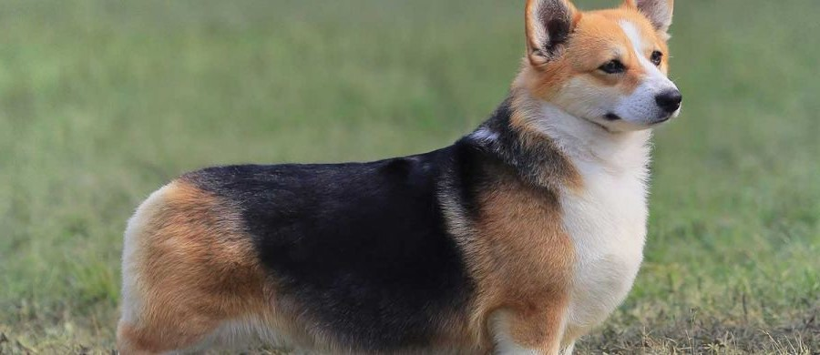

Picture |
Breed |
Description |
|
Golden Retriever |
The Golden Retriever, an exuberant Scottish gundog of great beauty, stands among America's most popular dog breeds. The Golden Retriever is a sturdy, muscular dog of medium size, famous for the dense, lustrous coat of gold that gives the breed its name. Goldens are outgoing, trustworthy, and eager-to-please family dogs, and relatively easy to train. They take a joyous and playful approach to life and maintain this puppyish behavior into adulthood. These energetic, powerful gundogs enjoy outdoor play. |
|  |
Pembroke Welsh Corgi |
Among the most agreeable of all small housedogs, the Pembroke Welsh Corgi is a strong, athletic, and lively little herder who is affectionate and companionable without being needy. At 10 to 12 inches at the shoulder and 27 to 30 pounds, a well-built male Pembroke presents a big dog in a small package. The Pembroke is a bright, sensitive dog who enjoys play with his human family and responds well to training. As herders bred to move cattle, they are fearless and independent. They are vigilant watchdogs, with acute senses and a 'big dog' bark. Families who can meet their bold but kindly Pembroke's need for activity and togetherness will never have a more loyal, loving pet. |
|
Dachshund |
The famously long, low silhouette, ever-alert expression, and bold, vivacious personality of the Dachshund have made him a superstar of the canine kingdom. Dachshunds can be standard-sized (usually 16 to 32 pounds) or miniature (11 pounds or under), and come in one of three coat types: smooth, wirehaired, or longhaired. Dachshunds aren't built for distance running, leaping, or strenuous swimming, but otherwise these tireless hounds are game for anything. Smart and vigilant, with a big-dog bark, they make fine watchdogs. Bred to be an independent hunter of dangerous prey, they can be brave to the point of rashness, and a bit stubborn, but their endearing nature and unique look has won millions of hearts the world over. |